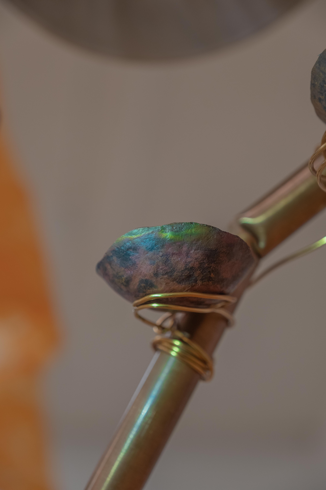
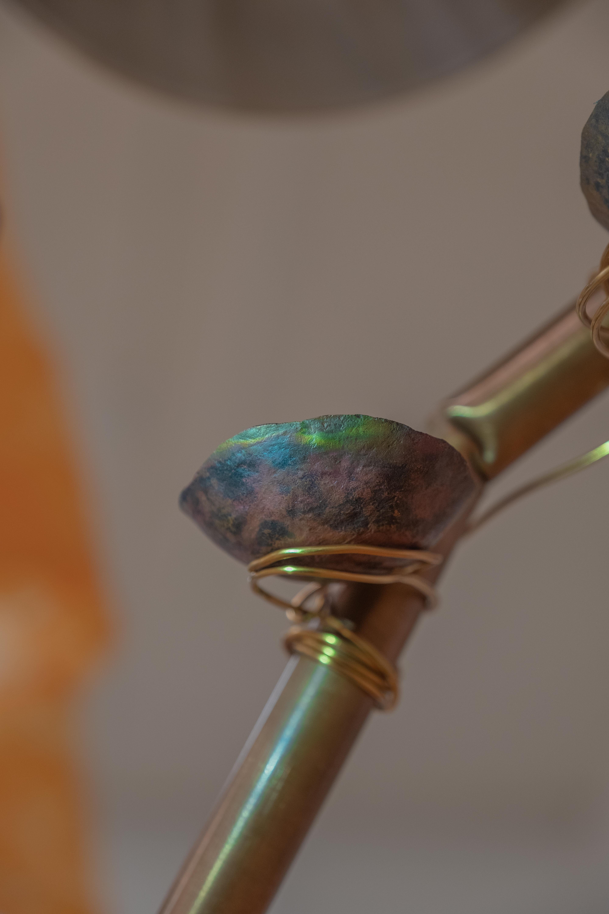

Bindi mirror
1


Chaff & light trash | A thesis show by Bhavani Srinivas |
Info |
1 Bindi mirror |
|
“Put the rice in, and run cold water in to fill the pot so that
|
| | |
Bindi mirror | 1 |
|
|
Canvas, transparency film, pokeberries, goldenrod, sticker pottus, metallic thread, green marble gesso, beads, methyl cellulose
|
Your hair is eating too! | 2 |
      |
|
Thalippu | 3 |
       
|
|
Imaginary friends | 4 |
 .jpg)  
|
|
Ikat printers and loom | 5 |
     .JPG) 
|
|
Pindam | 6 |
   
|
Silk, cotton, and synthetic fabric from Nalli 100, Japan and Nepal, bookcloth from Firestone Conservation Lab, glass beads, spray-painted staples, paper towel, silk cotton, paruppu podi, oil paint, collected fibers, wood shavings, dye plant seeds, nastursium seeds, rust, plastic bags, hair, sticker pottu packets, paper, notebook, surya chandra, jewelry, bells, shalangai, PBJ sandwich, jar, linen, wool, cotton, nettle and synthetic yarns, keychains, varsity letters, woodblock, mussel shells, doll heads, sequins, leaves, projectors, cardboard boxes, aqua-resin, acai beads, Lloyd's Register project forms
|
1008 coconuts | 7 |
     
|
Electrical wire, plastic coated chain, rhinestone chain, raw silk, plaster gauze casts, cotton thread, raw silk, projector, video, brick wall fragments, steel frame, rubber tubing, leather, culvert drainage pipe
|
Beep | 8 |
  
|
Artist books: Please close the door and Wanted, electrical wire, wool yarn, leather, culvert drainage pipe, screws
|
Happy only | 9 |
| Eversilver engraved by Tamil Arasu. Carpet woven under the instruction of Prasida Chavan. | Stainless steel tumblers and dabaras from Ratna Stores, cotton yarn
|
Light trash | 10 |
   
|
Lampworked glass, charcoal, sticker pottus, plaster casts, kolam powder, glitter, dragon skin, aluminum foil, duct tape, wooden dowel and block, alginate, silk, indigo, cochineal, walnut hulls, cotton yarn, chemical dye, hand-forged copper, steel wire, fork, foam, carpet
|
Pathologized Caslon | 11 |
This website is typeset in Pathologized Caslon, a distortion of the semibold weight of Carol Twombly's Adobe Caslon Pro that I made for Art Hx.
|
|
⧚
Introduction to the critique by Megan Pai

|
Chaff & light trash is a thesis show by Bhavani Srinivas. Chaff & light trash was installed from November 20–23, 2020 in Hagan Gallery at 185 Nassau Street, the building that houses Princeton University's Program in Visual Arts. Hagan Gallery and Princeton University occupy the unceded traditional territory of the Nanticoke Lenni-Lenape Tribal Nation. |
 Back to top |
Documentation was photographed by Megan Pai, Victor Guan, and T.R. Srinivas. I thank my advisors, Martha Friedman, David Reinfurt, and Anna Arabindan-Kesson, as well as James Welling, Laura Coombs, and MJ Daines for their generous advice. I am also grateful to the staff at 185, especially Nick Sharpe and Orlando Murgado, Eric Li, Eli Berman, Somi Jun, MC Otani, Ariane Fong, Sharon Musa, Sophie Wheeler, Cammie Lee, Victor Guan, Megan Pai, Jhor van der Horst, Janette Lu, and Gaby Pollner, and my parents, grandparents, and brothers for their support. |